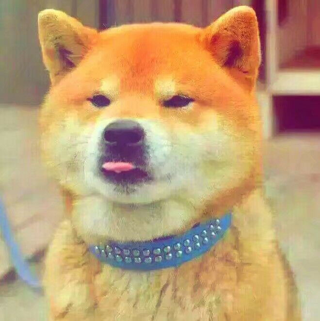

About Yuhang
- My name is Yuhang Tian.
- I love Mayday so much that I usually set all my User's name as Maydaytyh.
- I am an optimistic boy who loves running,reading and sleeping.
My clasess in BIT
In the first three weeks,I will take part in the Web development foundation and Programming method and practice, and I think there will be many difficulties and pleasures.
My Favorite movies
I haven't seen many movies but I indeed have some movies which haved played several times for myself.
- The Shawshank Redemption
(Wiki Of It)
- Zootopia
(Wiki Of It)
- 忠犬ハチ公
(Wiki Of It)
My Portraits
When I am happy When I fell sad


My friends
- Han wang is a interesting boy who always was late for class due to sleeping. And here is his blog
- Changhao Li is a handsome boy who are very good at fixing computers. And here is his blog